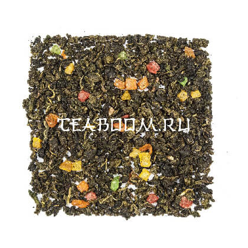

Китайский светлый ароматизированный улун
арт: 01306
Описание
Состав
Китайский бирюзовый чай, цукаты, натуральные ароматические масла. Светлый Фуцзяньский улун с ароматом ананаса. В сухом виде — красивый крупный лист изумрудного цвета, скруткой листа напоминающий Те Гуань Инь. В прогретой посуде аромат свежей, весенней зелени и спелого ананаса. Скрученный лист медленно раскрывается, отдавая весь свой аромат. Тем, кому пришёлся по вкусу этот чай, может также понравиться связанный чай «Ананасовый рай».
Вкус
Настой прозрачный, светло-янтарного цвета. Классическая нота светлого фуцзяньского улуна переплетается c яркой ананасовой нотой.
Полезные свойства